The conditional estimation methods in SPK use either the Expected Hessian objective function, which is equivalent to NONMEM'S First Order Conditional Estimation (FOCE) method, or the Laplace objective, which is equivalent to NONMEM's Laplace method. Both conditional estimation methods perform Taylor series approximation of the model function 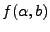 by setting 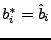 for all of the individuals.
The following table lists the residual related quantities, their values as calculated by SPK, and their values as calculated by NONMEM. Eq. 16 applied to Eq. 32 provides the PPRED entry in the table below. The rest of the entries follow similarly. In this case, the NONMEM values are calculated using one of NONMEM's conditional estimation that are available in the $ESTIMATION command.
| Quantity | SPK Value | Description | Name | NONMEM Value |
| 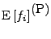 | 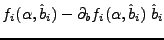 | Approximate predicted value for an individual's data. | PPRED | Not available in NONMEM. |
| 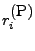 | 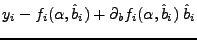 | Approximate residuals for an individual. | PRES | Not available in NONMEM. |
| 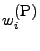 | 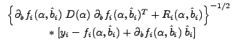 | Approximate weighted residuals for an individual. | PWRES | Not available in NONMEM. |
| 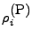 | 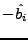 | Individual parameter residuals for an individual. | PETARES | Not available in NONMEM. |
| 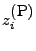 | 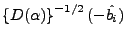 | Weighted individual parameter residuals for an individual. | PWETARES | Not available in NONMEM. |
The following table lists the residual related quantities, their values as calculated by SPK, and their values as calculated by NONMEM for the case variables without P, I or L prefix. These quantities are supposed to be compatible with NONMEM outputs. In this case, the NONMEM values are the same. Note that in the case of the First Order method in SPK, PPRED and PRED coincide, but this is not true for the Expected Hessian.
| Quantity | SPK Value | Description | Name | NONMEM Value |
| 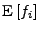 | 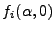 | Approximate predicted value for an individual's data. | PRED | Same. |
| 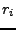 | 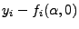 | Approximate residuals for an individual. | RES | Same. |
| 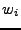 | 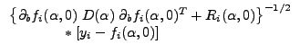 | Approximate weighted residuals for an individual. | WRES | Same. |
| 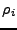 | 0 | Individual parameter residuals for an individual. | ETARES | Not available in NONMEM. |
| 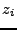 | 0 | Weighted individual parameter residuals for an individual. | WETARES | Not available in NONMEM. |
When Eq. 17 applied to Eq. 32, the optimal value for 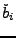 actually coincides with 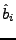 due to the properties of Gauss-Newton optimization. Thus, in the Expected Hessian, 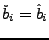 and so the linerarized quantities are equal to the individual quantities.
| Quantity | SPK Value | Description | Name | NONMEM Value |
| 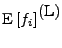 | 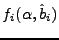 | Approximate predicted value for an individual's data. | LPRED | Not available in NONMEM. |
| 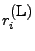 | 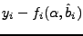 | Approximate residuals for an individual. | LRES | Not available in NONMEM. |
| 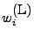 | 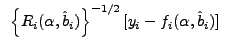 | Approximate weighted residuals for an individual. | LWRES | Not available in NONMEM. |
| 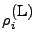 | Individual parameter residuals for an individual. | LETARES | Not available in NONMEM. | |
| 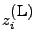 | Weighted individual parameter residuals for an individual. | LWETARES | Not available in NONMEM. |
Eq. 18 applied to Eq. 32 provides the IPRED entry in the table below. The rest of the entries follow similarly.
| Quantity | SPK Value | Description | Name | NONMEM Value |
| 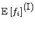 | Approximate predicted value for an individual's data. | IPRED | Not available in NONMEM. | |
| 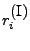 | Approximate residuals for an individual. | IRES | Not available in NONMEM. | |
| 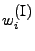 | 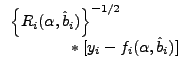 | Approximate weighted residuals for an individual. | IWRES | Not available in NONMEM. |
|
|
Individual parameter residuals for an individual. | IETARES | Not available in NONMEM. | |
| 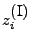 | Weighted individual parameter residuals for an individual. | IWETARES | Not available in NONMEM. |